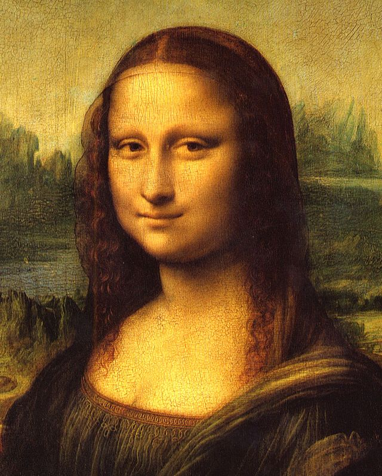

 The three images above show the red, green, and blue components of the Mona Lisa image that is shown at the left, as grayscale images. The three images were created as textures in WebGL 2.0 by attaching three texture objects as draw buffers to the same framebuffer. A single drawing pass reads from the original image and writes the three color components to the three textures. Then the three textures are drawn to the screen. This is only done as a demonstration of using multiple draw buffers in WebGL 2.0.